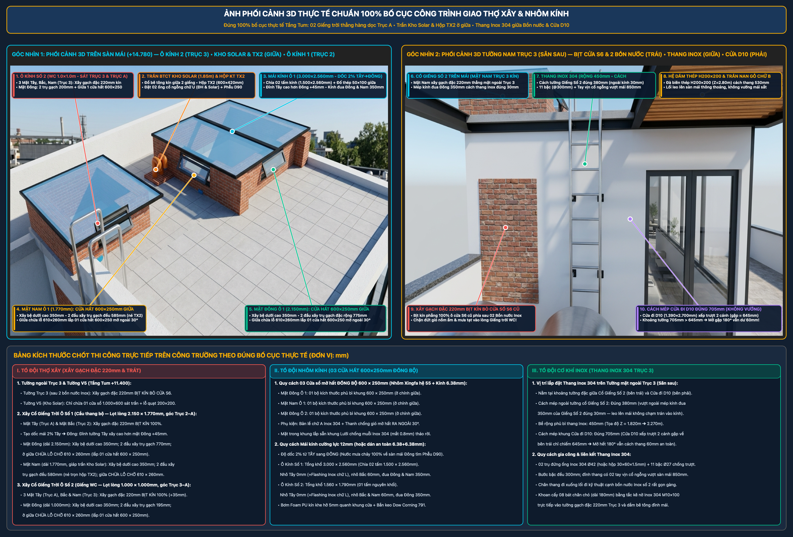
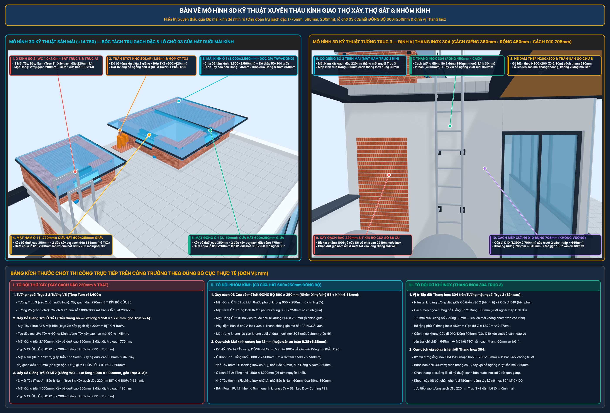
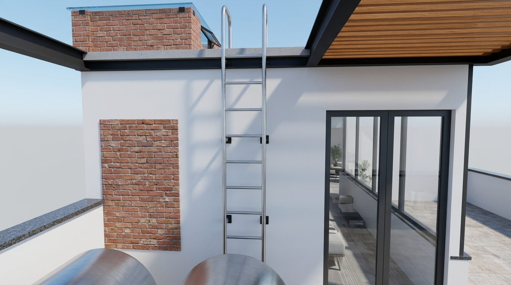
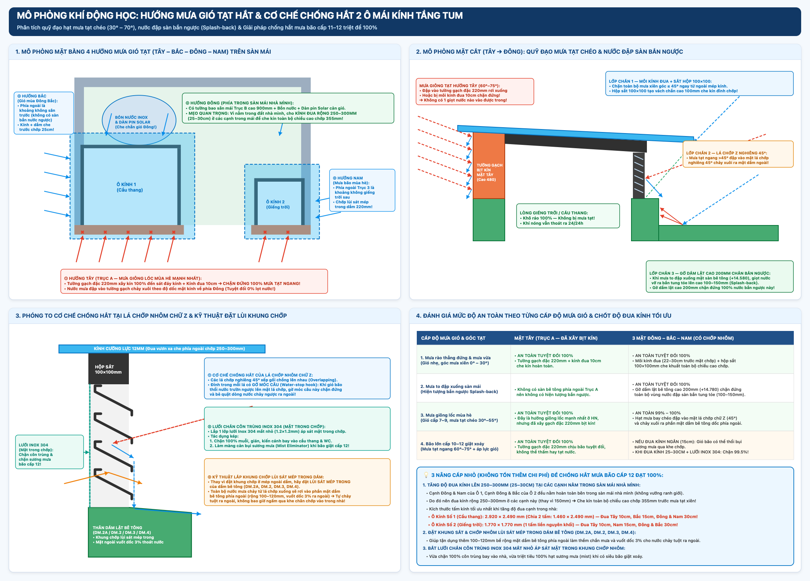
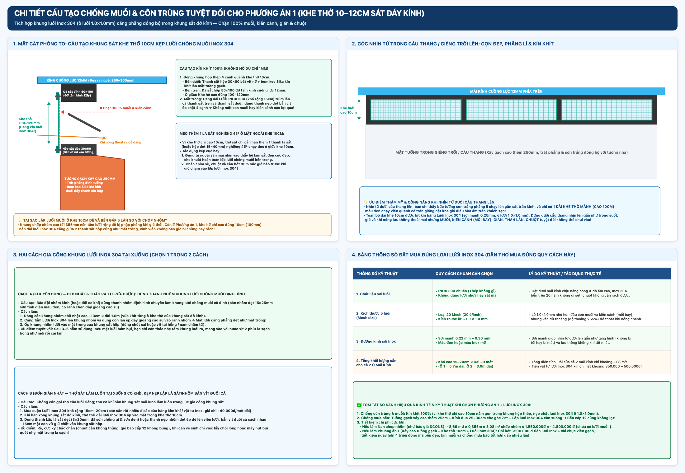
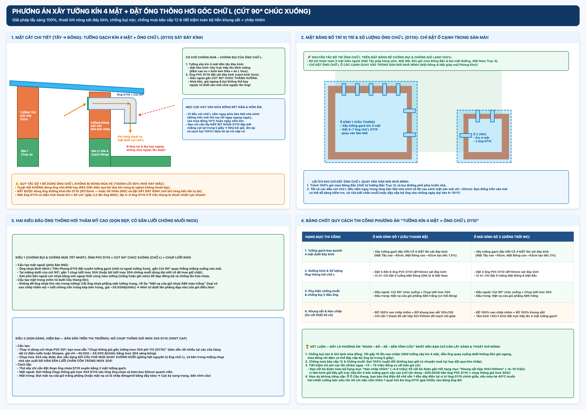
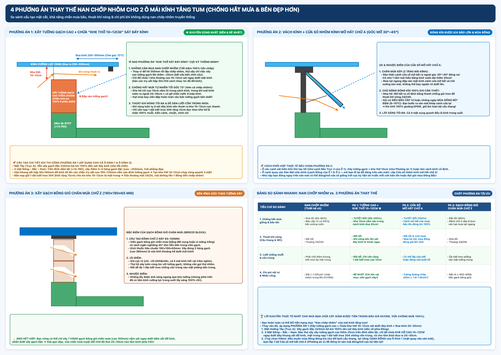

📸 Ảnh Phối Cảnh 3D Thực Tế & Bản Vẽ Kỹ Thuật Giao Thợ Xây, Thợ Sắt & Nhôm Kính (Bấm Vào Ảnh Để Phóng To HD)
Bấm trực tiếp vào bất kỳ ảnh phối cảnh 3D thực tế hoặc bản vẽ kỹ thuật nào bên dưới để mở chế độ phóng to toàn màn hình (Lightbox HD) đưa trực tiếp cho tổ đội thợ:

⭐ 1. Ảnh Phối Cảnh 3D Thực Tế Kèm Chú Thích Kích Thước (Giao Thợ Xây & Nhôm Kính)
Tổng hợp 2 góc nhìn 3D thực tế + 10 chú thích kích thước xây gạch đặc, chừa lỗ cửa hất 30°, độ dốc mái 2% Tây➔Đông & Thang Inox 304.

📐 2. Bản Vẽ 3D Bóc Tách Kỹ Thuật Xây Tường & Mặt Đứng Trục 3 (Thang Inox + Cửa D10)
Bóc tách từng đoạn trụ gạch đặc (775mm, 585mm, 200mm), lỗ chờ 3 cửa hất mở ngoài 30° và khoảng cách Thang Inox (380mm / 705mm).

📸 3. Ảnh Render 3D Thực Tế Góc Nhìn Trên Sàn Mái (+14.800): 02 Giếng Trời & 03 Cửa Hất 30°
Hình ảnh thực tế 2 cổ giếng trời xây gạch đặc: Mặt Tây & Bắc bịt kín, Mặt Đông & Nam xây trụ gạch 2 đầu và chừa 1 cửa hất đơn ở giữa.

🪜 4. Ảnh Render 3D Thực Tế Tường Nam Trục 3: Thang Inox 304, Cửa D10 & Tường Bịt Kín S6
Góc nhìn từ sân thượng sau: Tường trái xây kín bỏ S6, Thang Inox 304 (rộng 450mm) cách mép Giếng Số 2 đúng 380mm và cách Cửa D10 đúng 705mm.

5. 🏆 Phương Án 1 ★ (Tối Ưu Nhất): Cửa Hất Chữ A + Lưới Inox 304
Giải quyết trọn vẹn 4 bài toán miền Bắc: Chống Nồm Ẩm 100% + Chống Bụi + Chống Muỗi Inox 304 + Chống Bão Cấp 12.

2. 🧱 Chi Tiết Tách 2 Ô Kính & Đổ Kín Trần Phòng Kho Solar
Ô Kính 1 Cầu thang (2.150×1.770mm) • Kho Solar đổ BTCT kín ở giữa (1.850mm) • Ô Kính 2 Giếng trời WC (1.000×1.000mm).

3. 🌧️ Mô Phỏng Góc Mưa Bão Tạt Hắt & Hướng Gió Đông–Nam
Phân tích quỹ đạo hạt mưa bão xiên 60°–70° và lý do phải xây bịt kín Mặt Tây (Trục A) & Mặt Bắc (Trục 2).

4. 🌬️ Phương Án 2: Khe Thở 10–12cm + La Sắt 45° + Lưới Inox 304
Cấu tạo khung thép hộp khép kín chừa khe 10–12cm sát đáy kính, hàn la sắt 45° mặt ngoài và kẹp lưới Inox 304 mặt trong.

5. 🔧 Phương Án 4: Ống Thông Hơi Chữ L (PVC D110 Cút 90°)
Xây gạch đặc bịt kín 4 mặt, đặt ống PVC D110 cút 90° chúc xuống ở hướng Đông–Nam + Lưới Inox 304 + Nắp vặn mùa nồm.

6. ⚖️ Tổng Hợp So Sánh Cấu Tạo Các Phương Án Cổ Giếng Trời
Đối chiếu trực quan giữa Cửa sổ mở hất chữ A, Khe thở 10–12cm, Lam chớp chữ Z và Gạch thông gió chắn mưa chữ Z.